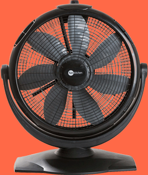

VENTILADOR BLUETOOTH ELETROPORTÁTIL VENTO FRESCO
Com DESIGN MODERNO e adequado que se encaixa em qualquer espaço, a VENTO FRESCO inova ao lançar um eletroportátil com SETE hélices. Além disso, o ventilador vento fresco oferece INCLINAÇÃO REGULÁVEL, possui 3 velocidades e giro 360º que permite mudar a posição do vento sem mudar o localização do ventilador. Excelente modelo para ajudar na circulação de ar e refrescar os dias e noites de calor intenso já que o ventilador vento fresco SE ADAPTA em qualquer cômodo da casa ou escritório, basta colocar o aparelho onde quiser e depois só ajustar a direção da base e a velocidade pelo sistema EXCLUSIVO criado pela vento fresco, DIRETAMENTE pelo aplicativo do seu SMARTPHONE, sem precisar ir até o aparelho para isso.
3 Velocidades
7 Hélices
60cm de diâmetro
70cm de altura
Disponível na versão 110V ou 120V
7 Hélices
60cm de diâmetro
70cm de altura
Disponível na versão 110V ou 120V
Muito silencioso
leve e fácil para transportar
120 Watts de potência
Ajuste de Inclinação
Fácil manuseio
leve e fácil para transportar
120 Watts de potência
Ajuste de Inclinação
Fácil manuseio
R$ 499,99
ou em até 10x 49,99 sem juros
FRETE GRATIS
FRETE GRATIS